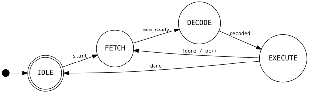

Finite state machines turn up everywhere: protocol implementations, hardware controllers, UI flows, parsers. Drawing them well is useful but tedious. This post covers two tools I've built: a Pelican plugin that renders FSM diagrams at build time so they appear as images in published posts, and a Claude Code skill that generates diagrams from plain-English descriptions.
The pattern is identical to the WaveDrom plugin and skill: describe what you want, get a fenced code block, paste it into a post, and the build renders it to SVG automatically.
The Pelican plugin
The plugin is at github.com/morganp/pelican-fsm, cloned to ~/Code/pelican-fsm (a sibling directory to the blog repo). It intercepts fenced ```mermaid ``` and ```dot ``` code blocks before Pelican's standard Markdown processing, renders each one to an SVG using the appropriate CLI tool, caches the result by content hash in content/images/fsm/, and replaces the block with a standard image reference. Pelican then copies the SVG to output/images/fsm/ as a static asset.
SVGs are cached across builds, so only diagrams whose source has changed are re-rendered.
Requirements
npm install -g @mermaid-js/mermaid-cli
brew install graphviz # macOS
sudo apt install graphviz # Debian/Ubuntu
Both tools are optional. If one is missing, blocks for that type fall back gracefully to a fenced text block without failing the build.
Installation
Clone the plugin alongside your Pelican project and install it into the Pelican virtualenv in editable mode:
git clone https://github.com/morganp/pelican-fsm ../pelican-fsm
source venv/bin/activate
pip install -e ../pelican-fsm --config-settings editable_mode=compat
The editable_mode=compat flag is required. Without it, modern setuptools editable installs use a path-hook mechanism that prevents Pelican's namespace plugin auto-discovery from finding the plugin.
Pelican 4.5+ auto-discovers namespace plugins, so no changes to pelicanconf.py are needed.
Optional config
If mmdc or dot are not on your PATH during the build, set their full paths in pelicanconf.py:
FSM_MERMAID_CLI = '/opt/homebrew/bin/mmdc'
FSM_DOT_CLI = '/opt/homebrew/bin/dot'
Using it in a post
Write a fenced code block with the language set to mermaid or dot:
```mermaid
stateDiagram-v2
[*] --> Idle
Idle --> Running : start
Running --> Idle : stop
Running --> Error : fault
Error --> Idle : reset
```
At build time this becomes an SVG embedded in the page:

Graphviz DOT works the same way, and is a better fit for hardware and RTL documentation where the compact box-and-arrow style is conventional:

If the CLI is not found or rendering fails, the block falls back to fenced text — the post still builds, you just see the raw source instead of a diagram.
The Claude Code skill
The skill lives at github.com/morganp/dotfiles/tree/main/config/claude/skills/fsm. Claude Code auto-discovers skills from ~/.claude/skills/ and loads them on demand.
The skill triggers automatically when you describe anything involving states, transitions, or control flow: protocol implementations, UI flows, hardware FSMs, parsers, game logic. You describe the system in plain English and Claude generates the diagram.
The skill knows:
- Full Mermaid
stateDiagram-v2 syntax: plain states, display labels, transitions with events/guards/actions, composite (nested) states, choice pseudostates, fork/join for parallel regions, concurrent regions (--), notes, direction, and classDef styling
- Graphviz DOT FSM conventions: Moore vs Mealy annotation, initial pseudostate arrow, accepting states as double circles
- When to prefer each format: Mermaid for software/web docs, DOT for hardware/RTL
Example workflow
Describe the system:
"Draw the states for a TCP connection"
Claude produces:

Because the skill outputs a mermaid fenced block, you can paste it directly into a blog post and the Pelican plugin renders it automatically.
Installing the skill
mkdir -p ~/.claude/skills/fsm
curl -o ~/.claude/skills/fsm/SKILL.md \
https://raw.githubusercontent.com/morganp/dotfiles/main/config/claude/skills/fsm/SKILL.md
Or clone the dotfiles repo and symlink:
git clone https://github.com/morganp/dotfiles ~/dotfiles
ln -s ~/dotfiles/config/claude/skills/fsm ~/.claude/skills/fsm
Syntax quick reference
Both formats can express the same FSM concepts, but use different syntax. The table below maps them side by side.
| Concept |
Mermaid stateDiagram-v2 |
Graphviz DOT |
| Graph declaration |
stateDiagram-v2 |
digraph FSM { ... } |
| Default node style |
automatic |
node [shape=circle] |
| Left-to-right layout |
direction LR |
rankdir=LR |
| Comment |
%% comment |
// comment |
| Plain state |
StateName |
StateName |
| State with display label |
state "Label" as Name |
Name [label="Label"] |
| Initial pseudostate |
[*] --> State |
__start [shape=point width=0.2] + __start -> State |
| Final/accepting state |
State --> [*] |
State [shape=doublecircle] |
| Transition |
A --> B |
A -> B |
| Transition with event |
A --> B : event |
A -> B [label="event"] |
| Transition with action |
A --> B : event / action() |
A -> B [label="event / action()"] |
| Guarded transition |
A --> B : [guard] |
A -> B [label="[guard]"] |
| Composite (nested) state |
state S { ... } |
subgraph cluster_S { ... } |
| Choice pseudostate |
state C <<choice>> |
C [shape=diamond] |
| Fork pseudostate |
state F <<fork>> |
invisible node + multiple outgoing edges |
| Join pseudostate |
state J <<join>> |
invisible node + multiple incoming edges |
| Concurrent regions |
-- inside composite |
parallel subgraph blocks |
Project structure
~/Code/
├── morganp.github.io/ # blog source (main branch)
│ └── content/images/fsm/ # SVG cache (persists across make clean)
└── pelican-fsm/ # github.com/morganp/pelican-fsm
└── pelican/plugins/fsm_renderer/
├── __init__.py # plugin entry point, signal registration
└── preprocessor.py # Markdown extension + preprocessor
~/.claude/skills/
└── fsm/
└── SKILL.md # Claude Code skill definition
The combination is useful for any documentation that involves control flow: describe the behaviour, get the diagram from Claude, drop it into a post, and the plugin renders it at build time. No manual editing of diagram syntax, no copy-pasting between browser tabs.